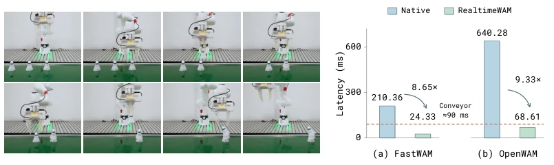
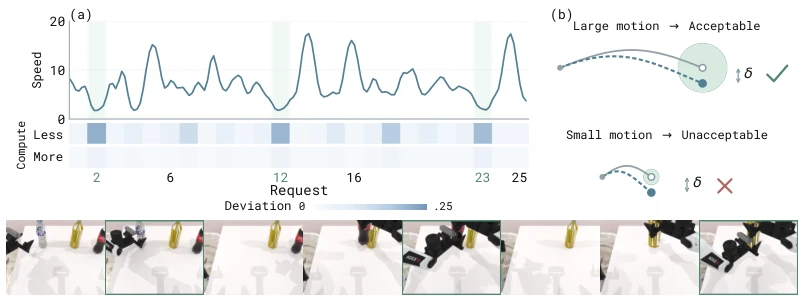
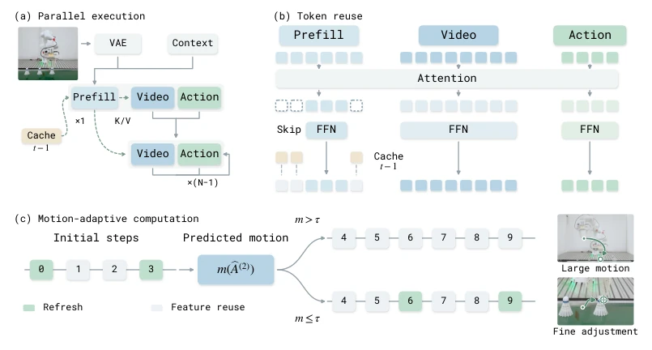
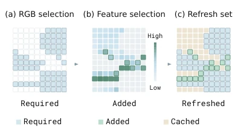
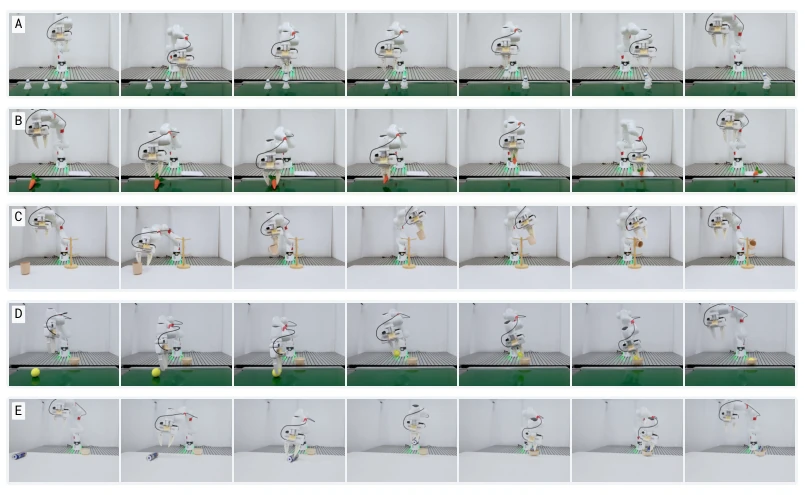
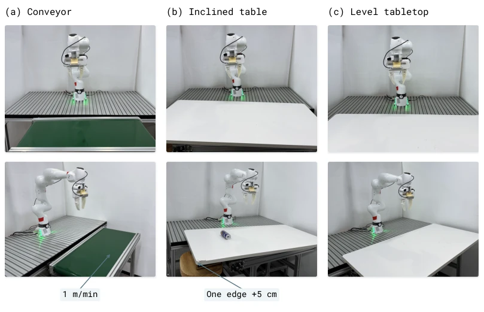
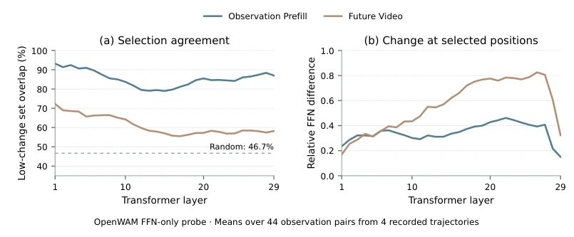
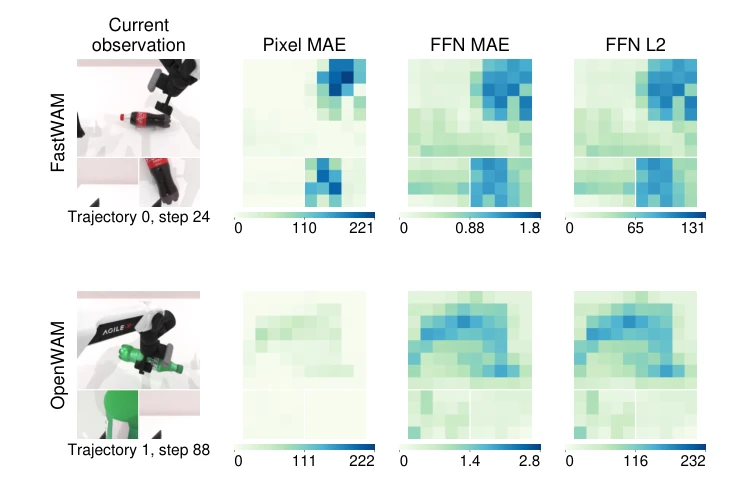

WAM 结合视觉动态与动作生成，但推理延迟太高，导致机器人反应不过来（Black et al., 2025b）。在动态操作如传送带抓取中，场景变化快于模型推理，导致动作失效。FastWAM (Wang et al., 2026) 虽去掉了视频生成，但架构定制强，通用性差。现有缓存策略如 TeaCache (Liu et al., 2025a) 仅利用特征冗余，没考虑闭环控制中计算需求的动态变化。固定调度无法适应场景变化，需要并行执行与自适应计算的协调。单纯减少计算量不能解决观察处理与预测的调度问题，必须结合硬件约束。
—

Figure 1: Responsive robot control with RealtimeWAM. Left: stacking three shuttlecocks on the conveyor requires rapid responses to scene changes. Right: mean measured inference latency on this task from Table 4, on RTX 4090. The dashed line marks the empirically observed conveyor-task threshold of approximately 90 ms, above which task success was substantially lower (Appendix A).

Figure 3: Changing motion and precision requirements. (a) Smoothed predicted speed (mm/control step) and relative deviation from a reference using more computation. Darker cells indicate larger deviations; green marks identify selected observations. (b) Illustrative cases: the same offset δ fits the large movement’s wide tolerance but exceeds the small adjustment’s narrow tolerance. Measurement details are in Appendix E.
Figure 2: Parallel execution across WAM architectures. Left: action prediction alone. Right: joint video and action prediction. Each pair contrasts native and parallel execution. Layerwise release of observation K/V allows prediction to proceed alongside Prefill; shaded regions group work available for concurrent execution.

Figure 4: Coordinating token reuse and motion-adaptive refinement. (a) Observation processing proceeds alongside Video and Action prediction. (b) Selected Prefill tokens receive fresh FFN outputs; the remaining positions reuse cached outputs. Future-video and action prediction execute their full branches at each selected Transformer evaluation. (c) Transformer refreshes at Euler updates 0 and 3 provide the motion estimate that selects additional refreshes at 6 and 9. Both schedules perform ten updates, with current input features and output heads evaluated at every step.

Figure 5: Prefill token allocation. (a) RGB change identifies required tokens. (b) Feature change ranks the remaining tokens to fill spare capacity. (c) Required and added tokens are re- freshed; the rest stay cached. Each cell is one observation token.
Figure 6: Dynamic allocation over one rollout. Shared observations accompany evaluation budgets (a) and token allocation (b) across all 50 requests of an OpenWAM block-sorting rollout. Hatching marks initialization.

Figure 7: Real-world task sequences. Rows A–E show stacking three shuttlecocks, placing a carrot on a plate, hanging a mug, transferring a tennis ball, and intercepting a rolling can, respectively. Seven frames progress from left to right within each recording.
其他图片Other Figures

Figure 8: Real-world experimental setups. Front views (top) and oblique views (bottom) of the three setups. (a) Conveyor. (b) Inclined tabletop. (c) Level tabletop.

Figure 9: Stability of a selection across layers. (a) Overlap with each layer’s lowest-change set. (b) Relative FFN change at selected positions. Curves average 44 observation pairs. The future-video branch is a separate diagnostic selection; its mean overlap is 61.0%.

Figure 10: RGB and layer-0 FFN changes: typical examples. Observation pairs are eight envi- ronment steps apart. Camera regions are spatially aligned; each model and metric uses a fixed color range.